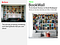

Book Wall Paper is covergrade or book grade


If you where sticking the covers of the ebook you have read on the walls how your space, office or room would look like.
If you decide to fill all your wall how many books you must read? How many have you already read?how many remain for you to fill all this wall with book covers?. .. CoverDiploma of CoverGrade
If you have never read this book you will never get this covergrade and you have a way to show to everybody that's it is a real and proven covergrade and nobody can have a false covergrade.
This is a business idea that could work. Go build it